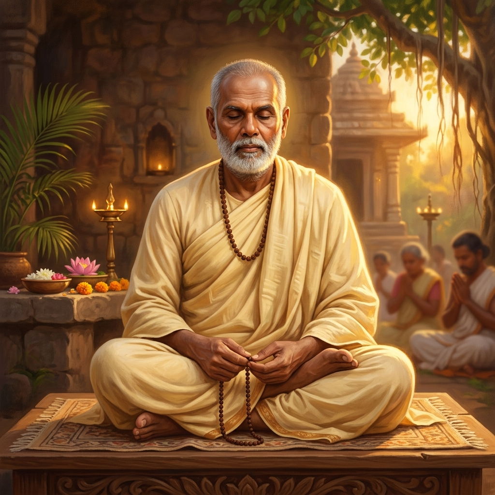
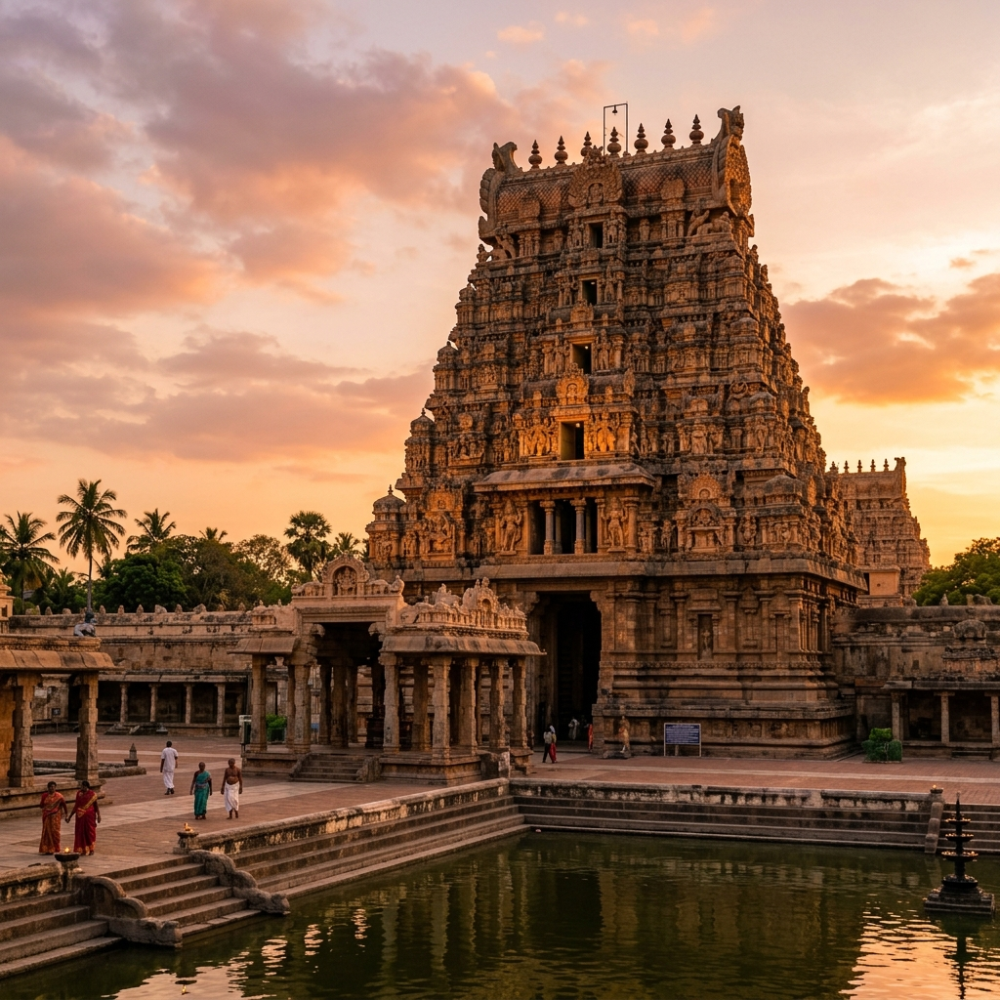

"One Caste, One Religion, One God for Man"
Sree Narayana Guru was an embodiment of all virtues, values and rare qualities seldom found in human race. He was a mystic, a philosopher, a visionary, a scientist, a social reformer and a poet, all blended into one. To millions of his devotees, Sree Narayana Guru is an incarnation of God. He was a saintly contemplative man who could impart wisdom and give enlightenment to a seeker of truth. His teachings are straightforward and simple, bringing out spiritual, moral and material revolution.
Sree Narayana Guru was born during India's darkest phase. The British ruled the country and the Indian Culture was at its most decadent. The twists and turns given by the custodians of Hindu Religion to Adwaita philosophy and Varnashrama led Hindus into a caste ridden society, dividing man against man and degrading a vast section of society into untouchables. Religion lost its credibility as a spiritual binding force. Places of worship were the monopoly of so-called upper castes. The lower castes were denied entry into temples. They were forbidden to walk along the public roads. They were denied education and employment. They were not allowed to wear proper clothes to cover their nakedness. It was at this time of misery that the Guru was born as a harbinger of hope and succour, a crusader of freedom and self-respect.
Sree Narayana Guru was born in a South Indian village, Chempazhanti in Kerala, on 26th of August 1855. Guru grew up seeing the pathetic condition of the fellow beings and the inhuman treatment inflicted upon them. His childhood incidents gave an indication that he was gifted with supernatural qualities to remove the sufferings of the poor and ignorant. After his education in Sanskrit and Ayurveda, he set out in search of truth. He wandered around in plains and forests. He learned Vedic philosophy and Upanishads. He also studied Tamil books like Tirukkural, Tirumandiram, Tiruppakazh, Tiruppavai, Vedanta Jnanavaddil Kattilai, Ozhaivil Ozhukkam, Sivapuranam etc. He did an intense penance in a cave at Marutvan hills sustaining himself on berries and tubers and drinking from mountain brooks. Just as Siddhartha became awakened under the Bodhi tree at Gaya and became Gautama Buddha, Narayana Guru emerged as an enlightened Guru from Maruthvan.

"Whatever be the religion, it is enough if man becomes good."
Sree Narayana Guru, instead of remaining in solitude and enjoying the divine bliss for himself, opted to utilize his spiritual achievements and wisdom, Atmavidya, for the betterment of humanity. He interpreted the quintessence of Vedic philosophy in its purest perspective and propounded the theory of universal brotherhood of mankind. The practical application of Sanatana Dharma and eternal truth in the day-to-day life of humanity was his greatest achievement. Guru placed the dignity and self-respect of mankind at the highest pedestal above all the religions and believed that the individual should have the freedom to choose his religion. He believed that if the religious strife is to end, every one should be taught the virtues of other man's religion and he should learn it with an open mind. This will reveal him that the fundamentals of all religions are the same. Religion does not mean sectarianism. It means a belief in ordered moral structure of the universe. It transcends Hinduism, Islam, Christianity etc. It harmonizes and brings forward the truth. True Knowledge of the religions breaks down the barriers between faith and faith. He neither made any religion nor propounded one.
Today everybody speaks of one world, of one humanity, of the essential unity of religion and of irrevocable solidarity of mankind. More than hundred years ago Sree Narayana Guru had presented his ideal of man as "One in kind, one in religion and one in God". Guru's audience was the neglected, hated, hunted and tabooed pariah, who saw in him a ray of hope. He was a savior for the persecuted masses of the world that toiled and moiled in sunshine and rain to feed, cloth and fatten those high-ups in the society, whose prerogative it was, in turn, to sin against man's dignity and self respect. In this modern era of a shrinking world to a global village, thanks to the information explosion and communication revolution, we can hope that the vision of Guru for a "One world government" and "One world humanity" may become a reality.
Guru lived with the caring benevolence of a compassionate Buddha and a loving Jesus. He set the pace of new revolution with personal examples, such as giving the pariah a chance of live the highest ideals of the Upanishads and eschewing all differences of caste and creed by opening places of worship and education where every man could assemble, work, learn and live in fraternity. He had emancipated vast enslaved section of the society from disgrace, superstition, practice of evil rituals and absured customs. In a nut shell, he filled the gap of a renaissance pending since ages to offer millions of masses Liberty, Equality and Fraternity. He revealed through his own life that how the Advaita philosophy, that the supreme one alone prevails and all that we see and experience are only its variegated manifestations, could be practically applied in the day to day life of humanity.

Guru revolutionized the existing social, religious and philosophical system. As a first step, he consecrated a **"Siva"** idol at **Aruvippuram** in Kerala in **1888** at a time when it was the exclusive prerogative of Brahmins to install idols and lower castes were denied entry into temples. At the temple entrance, he displayed a pathbreaking message:
The Aruvippuram consecration demolished the very foundation of age-old monopoly of priesthood. Slowly and steadily, his axe started falling on the mindset of the people. He made the marginalized believe that they are lower to none, that they have to learn to stand on their own feet, and that they must save themselves from superstitious beliefs and self-destructive rituals.
Guru did not stop at consecration of temples. He realized that lack of education and reasonable means of livelihood made people live like slaves. The schools then run by government and the upper caste hindus did not allow the lower caste people. Guru soon set out a plan to open education facilties at temple premises and mobolsed teachers. He also planned cottage industries like weaving and handicrafts to improve the livelihood of peopole. Guru consecrtaed several such temples all over Kerala and created facilities for education and employment. He also created an Organization by name **"Sree Narayana Dharma Paripalana (SNDP) Yogam"** in 1903 to carry forward his mission. Later many schools and institutions of higher education were started by SNDP Yogam. Mass movements like **"Vaikom Satyagraham"** opened the eyes of the ruling class and subsequently public schools were also thrown open to the lower castes. Guru was thus the pioneer of education revolution.
From dust he made men of dignity who became resourceful as leaders in all walks of life. His disciples include great poet like Kumaran Asan, rationalists, intellectuals, and innumerable devotees. He could inspire them all. He never argued about anything. He never criticized anybody. He was a man of composure and action. While he was liberating the people from age-old ill-conceived traditions, he never said a word against the custodians of traditional systems. Within a short span of time Guru could transform a state once called by Swami Vivekananda as "Lunatic Asylum" to a state of self respecting, forward looking, tolerant society. Mahatma Gandhi, Rabindranath Tagore and Acharya Vinoba Bhave visited Sree Narayana Guru at his abode in Sivagiri, Varkala in Kerala and paid glowing tributes.
Sree Narayana Guru wrote over 62 books in Sanskrit, Malayalam and Tamil. Most popular among them are **"Atmopadeshashadhakam"** (one hundred verses of self-instruction) written in Malayalam and **"Darshanamala"** written in Sanskrit.
This message cuts through all divisions. Humans belong to a single species (kind), share the same universal human religion (goodness), and have one supreme source of divinity.
Emphasizes character development, empathy, and social ethics over dogmatic alignments. True religion is defined by the quality of a person's life and behavior.
Guru viewed education as the single greatest tool for liberation. It frees the mind from ignorance, superstition, and dependency, restoring self-respect and dignity.
Underlined the importance of union and unified action. Through organization (like SNDP), marginalized sections could secure their legal, social, and economic rights.